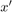
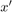
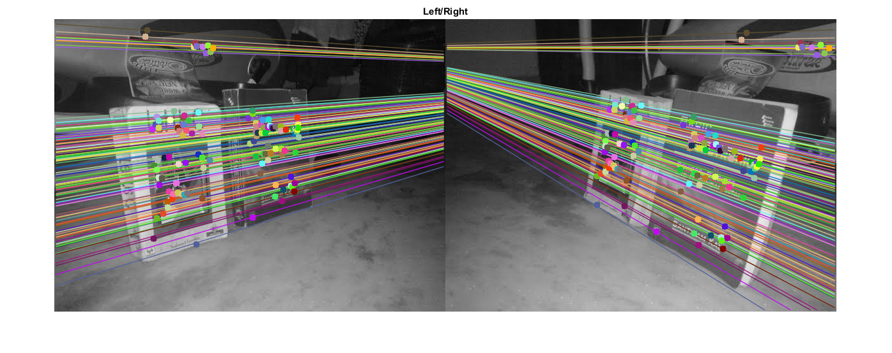

Epipolar Geometry
In this sample:
- We will learn about the basics of multiview geometry
- We will see what is epipole, epipolar lines, epipolar constraint etc.
Sources:
Contents
Theory
When we take an image using pin-hole camera, we loose an important information, i.e depth of the image, or how far is each point in the image from the camera because it is a 3D-to-2D conversion. So it is an important question whether we can find the depth information using these cameras. And the answer is to use more than one camera. Our eyes works in similar way where we use two cameras (two eyes) which is called stereo vision. So let's see what OpenCV provides in this field.
(Learning OpenCV by Gary Bradsky has a lot of information in this field.)
Before going to depth images, let's first understand some basic concepts in multiview geometry. In this section we will deal with epipolar geometry. See the image below which shows a basic setup with two cameras taking the image of same scene.

If we are using only the left camera, we can't find the 3D point corresponding to the point  in image because every point on the line projects to the same point on the image plane. But consider the right image also. Now different points on the line projects to different points () in right plane. So with these two images, we can triangulate the correct 3D point. This is the whole idea.
in image because every point on the line projects to the same point on the image plane. But consider the right image also. Now different points on the line projects to different points () in right plane. So with these two images, we can triangulate the correct 3D point. This is the whole idea.
The projection of the different points on form a line on right plane (line ). We call it epiline corresponding to the point . It means, to find the point on the right image, search along this epiline. It should be somewhere on this line. (Think of it this way, to find the matching
point in other image, you need not search the whole image, just search along the epiline. So it provides better performance
and accuracy). This is called Epipolar Constraint. Similarly all points will have its corresponding epilines in the other image. The plane is called Epipolar Plane.
and are the camera centers. From the setup given above, you can see that projection of right camera is seen on the left image at the point, . It is called the epipole. Epipole is the point of intersection of line through camera centers and the image planes. Similarly is the epipole of the left camera. In some cases, you won't be able to locate the epipole in the image, they may be outside the image (which means, one camera doesn't see the other).
All the epilines pass through its epipole. So to find the location of epipole, we can find many epilines and find their intersection point.
So in this session, we focus on finding epipolar lines and epipoles. But to find them, we need two more ingredients, Fundamental Matrix (F) and Essential Matrix (E). Essential Matrix contains the information about translation and rotation, which describe the location of the second camera relative to the first in global coordinates. See the image below (Image courtesy: Learning OpenCV by Gary Bradsky):

But we prefer measurements to be done in pixel coordinates, right? Fundamental Matrix contains the same information as Essential Matrix in addition to the information about the intrinsics of both cameras so that we can relate the two cameras in pixel coordinates. (If we are using rectified images and normalize the point by dividing by the focal lengths, ). In simple words, Fundamental Matrix F, maps a point in one image to a line (epiline) in the other image. This is calculated from matching points from both the images. A minimum of 8 such points are required to find the fundamental matrix (while using 8-point algorithm). More points are preferred and use RANSAC to get a more robust result.
Code
First we need to find as many possible matches between two images to find the fundamental matrix. For this, we use SIFT descriptors with FLANN based matcher and ratio test.
Next we find the Fundamental Matrix from the list of best matches from both the images.
Then we find the epilines. Epilines corresponding to the points in first image are drawn on second image. So mentioning of correct images are important here. We get an array of lines. So we define a new function to draw these lines on the images.
Below is the result we get:

You can see in the left image that all epilines are converging at a point outside the image at right side. That meeting point is the epipole.
For better results, images with good resolution and many non-planar points should be used.
Notes:
- One important topic is the forward movement of camera. Then epipoles will be seen at the same locations in both with epilines emerging from a fixed point. See this.
- Fundamental Matrix estimation is sensitive to quality of matches, outliers etc. It becomes worse when all selected matches lie on the same plane. See this.
function epipolar_geometry_demo()a pair of stereo images (grayscale)
img1 = cv.imread(fullfile(mexopencv.root(),'test','books_left.jpg'), ... 'Grayscale',true); % query image img2 = cv.imread(fullfile(mexopencv.root(),'test','books_right.jpg'), ... 'Grayscale',true); % train image
detect keypoints and calculate descriptors using SIFT
obj = cv.SIFT('ConstrastThreshold',0.03);
[kp1,desc1] = obj.detectAndCompute(img1);
[kp2,desc2] = obj.detectAndCompute(img2);match descriptors using FLANN
matcher = cv.DescriptorMatcher('FlannBasedMatcher', ... 'Index',{'KDTree', 'Trees',5}, 'Search',{'Checks',50}); m = matcher.knnMatch(desc1, desc2, 2);
keep only "good" matches (ratio test as per Lowe's paper)
m = cat(1, m{:}); % N-by-2 array of structs
idx_good = ([m(:,1).distance] < 0.8*[m(:,2).distance]);
m = m(idx_good,1);extract keypoints from filtered matches
pts1 = cat(1, kp1([m.queryIdx]+1).pt);
pts2 = cat(1, kp2([m.trainIdx]+1).pt);
if true
pts1 = int32(pts1);
pts2 = int32(pts2);
endfind Fundamental matrix
[F,mask] = cv.findFundamentalMat(pts1, pts2, 'Method','LMedS'); mask = logical(mask);
select only inlier points
pts1 = pts1(mask,:);
pts2 = pts2(mask,:);random colors to draw matching points and lines
clrs = randi([0 255], [size(pts1,1) 3], 'uint8');
clrs(:,4) = 0;find epilines corresponding to points in right image (second image) and draw its lines on left image
lines1 = cv.computeCorrespondEpilines(pts2, F, 'WhichImage',2);
[img11,~] = drawlines(img1, img2, lines1, pts1, pts2, clrs);find epilines corresponding to points in left image (first image) and draw its lines on right image
lines2 = cv.computeCorrespondEpilines(pts1, F, 'WhichImage',1);
[img22,~] = drawlines(img2, img1, lines2, pts2, pts1, clrs);show result
if ~mexopencv.isOctave() && mexopencv.require('images') imshowpair(img11, img22, 'montage') title('Left/Right') else figure('Position',[200 200 1200 400]) subplot(121), imshow(img11), title('Left') subplot(122), imshow(img22), title('Right') end
end function [img1,img2] = drawlines(img1, img2, lines, pts1, pts2, clrs) %DRAWLINES Draw epilines and points on images % % [img1,img2] = drawlines(img1, img2, lines, pts1, pts2, clrs) % % ## Input % * __img1__ first image % * __img2__ second image % * __lines__ epilines corresponding to `pts2` in `img2` % * __pts1__ points in `img1` % * __pts2__ points in `img2` % * __clrs__ color of each line and matching points % % ## Output % * __img1__ image with drawn points and epilines for the points in `img2` % * __img2__ image with drawn points % % Epilines corresponding to the points in 1st image is drawn on 2nd image. % % See also: estimateFundamentalMatrix, epipolarLine, lineToBorderPoints % % convert to RGB img1 = cv.cvtColor(img1, 'GRAY2RGB'); img2 = cv.cvtColor(img2, 'GRAY2RGB'); % epilines w = size(img1,2); N = size(lines,1); p1 = int32([zeros(N,1), -lines(:,3)./lines(:,2)]); p2 = int32([ones(N,1)*w, -(lines(:,3)+lines(:,1)*w)./lines(:,2)]); img1 = cv.line(img1, p1, p2, 'Colors',clrs, 'LineType','AA'); % matching points img1 = cv.circle(img1, pts1, 5, 'Colors',clrs, 'Thickness','Filled'); img2 = cv.circle(img2, pts2, 5, 'Colors',clrs, 'Thickness','Filled'); end